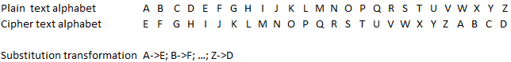

The Caesar cipher is one of the simplest and most widely known encryption techniques. It is named after Julius Caesar, who used it to communicate with his generals.
The Caesar cipher is a monoalphabetic substitution cipher.
At the Caesar cipher, every character of the text is replaced by a character k positions far away in the alphabet. This “shift“ k is the key, which is often not written as a number, but as a character of the alphabet. The key k as a number is then the position of this character in the alphabet (1-relative).
Since the Caesar cipher is a monoalphabetic substitution, it can also be described with a substitution alphabet. This substitution alphabet is of course just rotated by k. An example will describe it best - For k = 4 (and the standard Latin uppercase alphabet):

Every character in the plain text is substituted by the character which is at the same position in the cipher text alphabet.
Example of an encryption:
Plain text: “CHIFFRE”; key: “D” (means k=4)
Encryption result: „GLMJJVI“ (C+4 = G, H+4 = L, …; substitution alphabet example from above fits, too)
The decryption is done naturally by shifting the characters back up the alphabet by the amount k. Systematically, an inverse key i to k is created, with i = length(Alphabet) – k, and for decryption, the cipher text is “encrypted” with i.